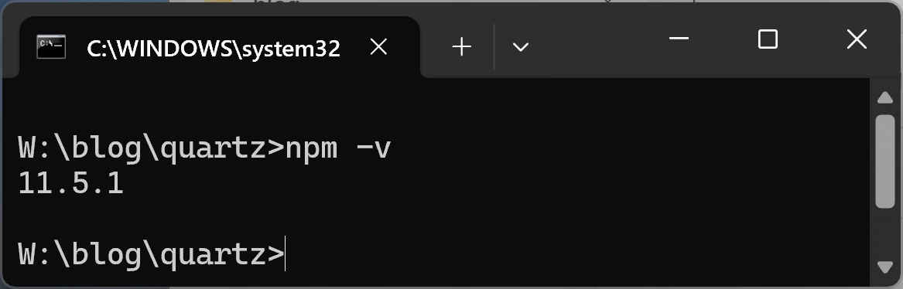
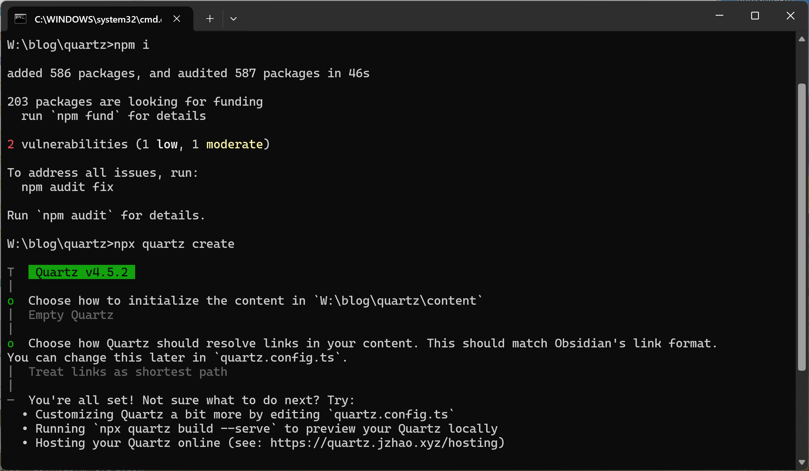
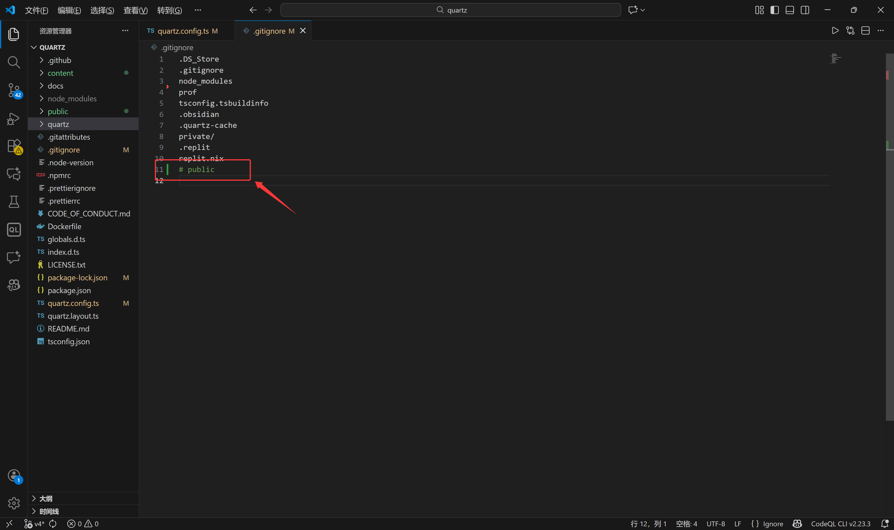
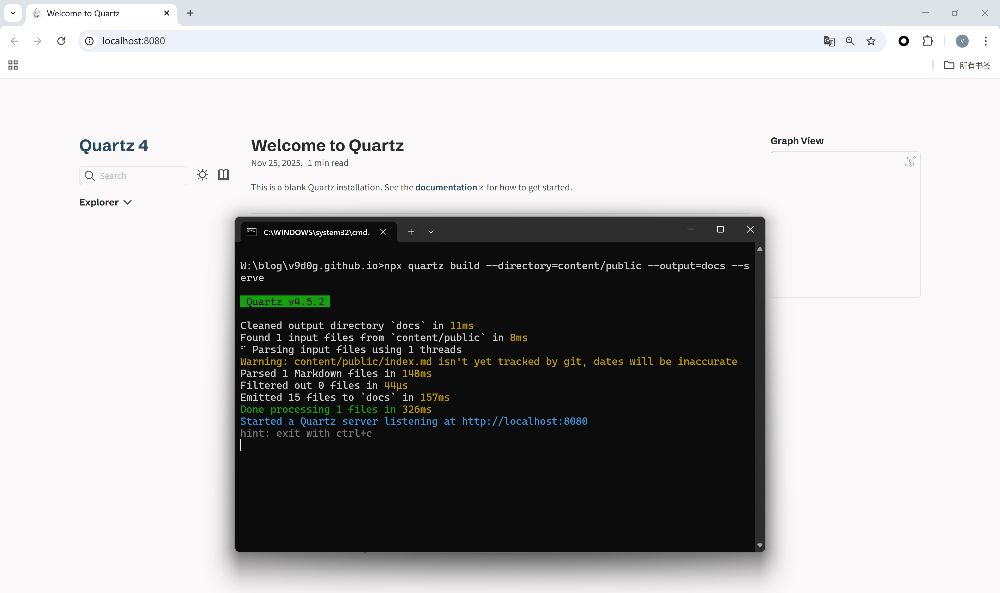
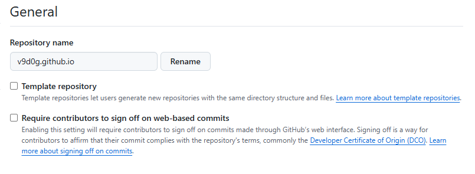
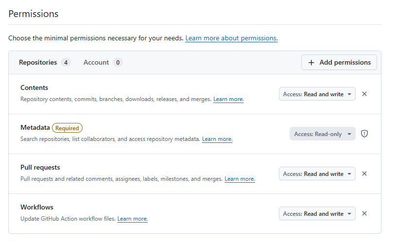
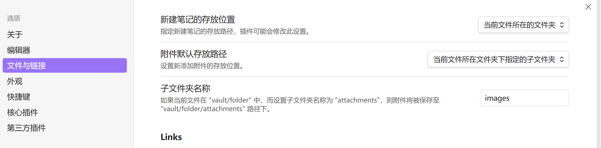
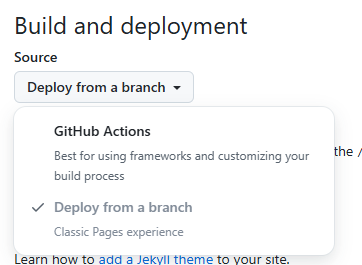
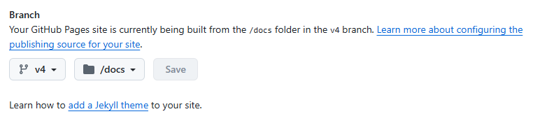
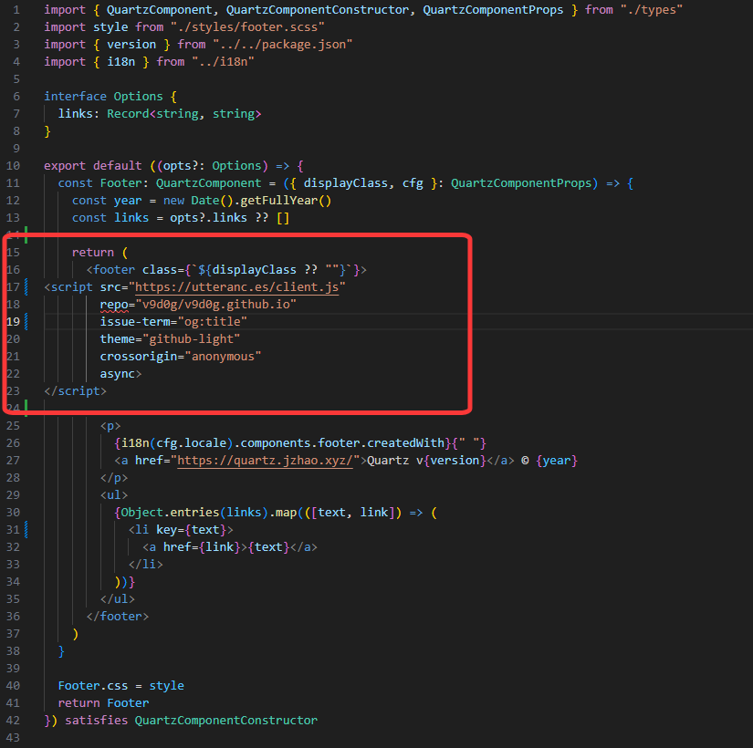

记录搭建过程以及美化的一些方案
本地搭建
环境安装
git下载，克隆仓库
git clone https://github.com/jackyzha0/quartz.git
cd quartznpm下载 版本：

npm i
npx quartz create
启动应用
注意：从仓库直接clone下来的文件默认会忽略public文件夹，如果要使用\content\public作为公开文件夹，需要注释掉

docs文件夹
创建文件夹/content/public文件夹，并将index.md文件移动到该文件夹
# --directory=content/public 只渲染content/public目录下文件
# --serve 本地热加载
# --port 本地端口 默认8080端口
# --output 指定生成html文件生成路径
npx quartz build --directory=content/public --output=docs --serve本地成功启动

其他
其余设置，诸如：国际化、页面修改、插件使用…可参考官方文档或者其他笔者文档
对外开放
前面是本地搭建的简单流程，如果你想要对外开放，并搭建站点，我推荐使用Github Pages自带的静态网页功能。
绝不是因为网上的教程我没办法复现
前期工作
- 本地可以正常使用Quartz（相关环境配置完成）
- 本地能够正常使用git
仓库创建与本地链接
登录github，创建一个空的仓库（不需要README等）命名为==username.github.io==


cd quartz修改远程仓库
git remote set-url origin https://github.com/xxx/xxx.github.io.git
# 记住token
git config --global credential.helper store使用其他方式也可（比如直接fork)，目的是要在github上有一个username.github.io的仓库，里面内容就是quartz项目，且本地可以git push等操作
本地obsidian&quartz联动
使用obsidian打开/xxx.github.io/content作为仓库
个人喜好设置obsidian的图片保存路径，这样删除图片的时候比较方便，会在对应md文件的文件夹中生成一个images文件夹专门存放图片

docs（删除原docs文件夹中内容，该文件夹主要是一些插件介绍文档）
npx quartz build --directory=content/public --output=docs提交修改
git add .
git commit -m "xxx"
# 可不选择v4分支
git push origin v4github静态托管
打开仓库→settings→Pages→Build and deployment→Source→Deploy from a branch


https://xxx.github.io即可看见页面了
后续通过obsidian编写文章，写完后通过
npx quartz build --directory=content/public --output=docs
git add .
git commit -m "xxx"
git push origin v4即可同步
其他问题
QUE.1_重新构建不会删除遗留文件
通过使用
npx quartz build后，创建的静态html并不会根据你markdown文件夹的结构进行更新，即会出现以下这种情况：
曾存在content/public/test/test.md文件，页面可以访问test.md的内容，且index页面有链接索引
删除content/public/test/test.md后，index页面仍有链接索引，但test.md已经不可访问，404错误
Temp：
使用一个批处理，每次push到仓库之前都点击一下 260319更新：使用一个批处理，完成删除以前的内容 重新构建 重新push
@echo off
setlocal
echo ==============================
echo [1/3] 清理 docs 目录
echo ==============================
if exist "%cd%\docs" (
rmdir /s /q "%cd%\docs"
if exist "%cd%\docs" (
echo ❌ 删除 docs 失败
goto :end
)
)
echo ✅ docs 已清理
echo.
echo ==============================
echo [2/3] 构建 Quartz
echo ==============================
REM ★关键：防止 npx 吃掉后续流程
call npx quartz build --directory=content/public --output=docs
if errorlevel 1 (
echo ❌ 构建失败
goto :end
)
echo ✅ 构建完成
echo.
echo ==============================
echo [3/3] Git 提交
echo ==============================
git add . || goto :end
git commit -m "docs:更新文章" || goto :end
git push origin v4 || goto :end
echo.
echo 🎉 全流程完成！
:end
echo.
echo 按任意键退出...
pause >nul
endlocalQUE.2_图片问题
本人编写笔记高度依赖obsidian，并且obsidian也支持很多插件，例如图片缩放插件——image toolkit
但通过quartz生成的静态文件貌似不能同步obsidian的插件，网页无法通过点击图片来进行缩放图片
Resolved：
使用插件可以实现简单的点击阅览
但这样的方式并不能在点击图片后进一步放大，而且图片的尺寸较小的情况，文本会围绕图片
Resolved：
修改图片插件
clickableImages.ts内容，并且插件已经实现了懒加载，具体可以参考本仓库中的代码
QUE.3_github comments
想要实现类似github中的评论功能，但这样似乎仅仅靠github pages无法实现，评论是需要数据库的
Resolved：
使用评论插件，本次选择的是Utterances
安装插件，获取对应js代码，将其内容插入到
quartz\components\Footer.tsx中

原计划是使用中文版utterances，即beaudar
但不知道什么原因，beaudar-bot并不能在我初次评论的时候创建对应的issue，隧止
QUE.4 obsidian 白板canvas适配
obsidian官方有一个插件——json-canvas
可以将obsidian生成的.canvas的类json文件转化为一个画布
可以根据这个代码而开一个Quartz插件
使用类似图片嵌入的方式
![[ xxx.canvas ]]来渲染当前目录下的canvas，内嵌到正文中
Resolved：
思路是创建一个插件
quartz\plugins\transformers\canvas.ts让其生成一个嵌入的iframe 并传递文件夹/xxx.canvas路径 由于是静态资源 在初始化的时候会在docs下备份一份xxx.canvas所以可以通过访问文章的方式 直接通过url访问canvas的json数据
quartz\static\在该目录下编写一个canvas-view.html用于接收 canvas的json数据 并进行渲染
全程使用ai编写 无人工参与
1.暂时并不能随着Quartz的明暗风格切换 2.markdown语法高亮是使用外部cdn 会增加加载时间
后续有时间应该会优化
QUE.5 代码框的行号、关键字高亮
- 时间：260605 想实现一个代码框的具体行号高亮的功能 而obsidian有一个插件提供了类似功能
使用claude将其迁移到Quartz上即可 高亮
print("hello world")
print("hello world")
print("hello world")行号起始偏移
print("hello world")
print("hello world")
print("hello world")折叠
print("hello world")
print("hello world")
print("hello world")代码块标题
print("hello world")
print("hello world")
print("hello world")标题变为可点击链接
print("hello world")
print("hello world")
print("hello world")计划将该仓库清理一下 毕竟现在相对于原版 已经添了不少自己的内容